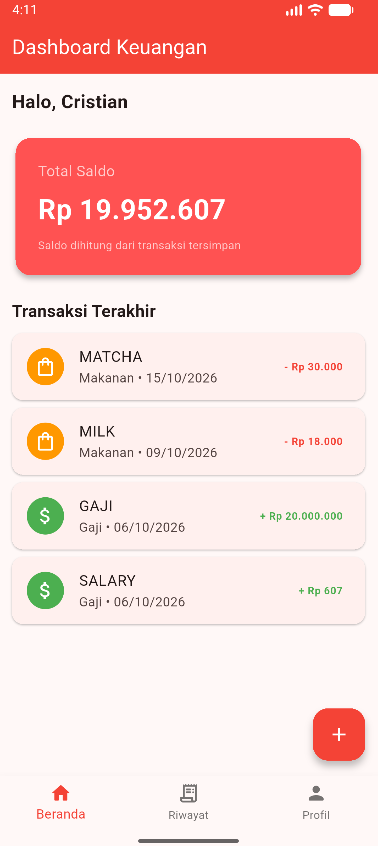
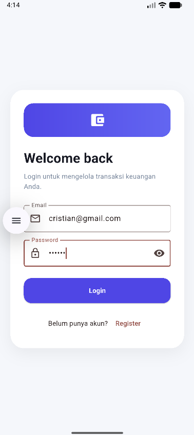
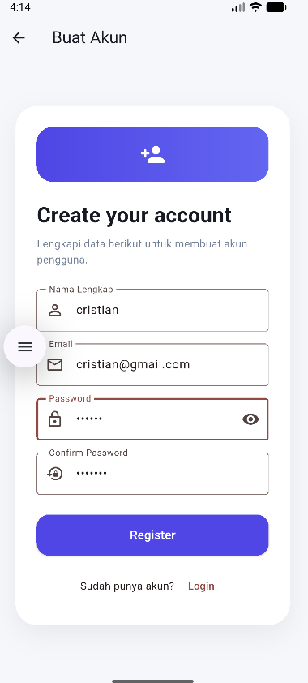
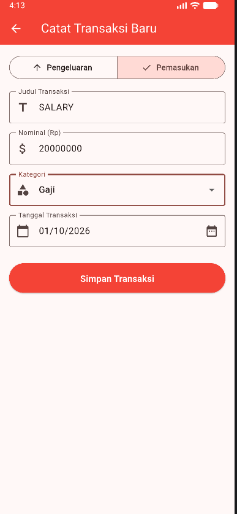
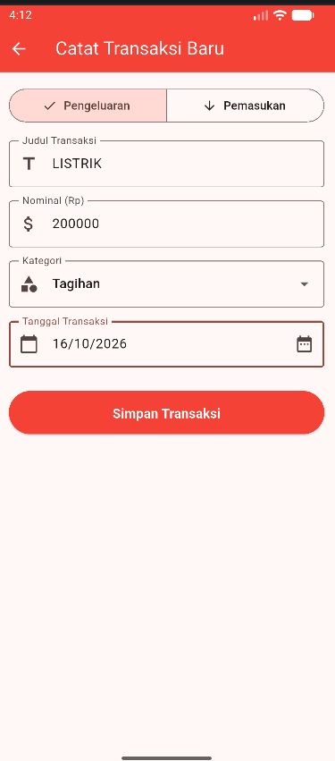
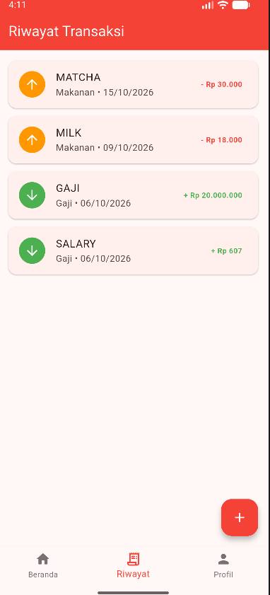
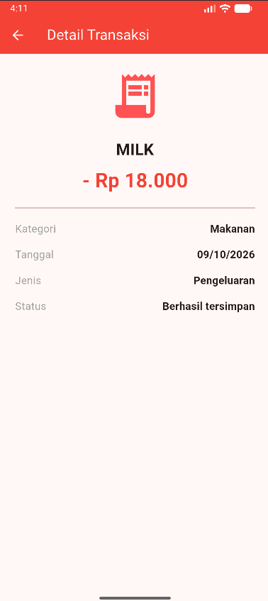
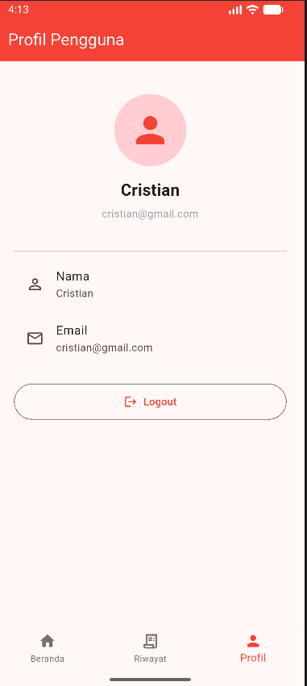

Akun lokal
Register dan login menggunakan data akun pada SQLite lokal. Setiap akun memiliki ID pengguna.
Praktikum Mobile Application 5
Praktikum Mobile Application — Integrasi Praktikum 1–5 Menggunakan Flutter
Expense Tracker Final merupakan aplikasi mobile untuk membantu pengguna mencatat pemasukan dan pengeluaran, melihat saldo keuangan, mengelola riwayat transaksi, serta menyimpan data secara lokal. Aplikasi ini merupakan integrasi hasil Praktikum Mobile Application 1–5.
Tautan APK membuka folder Google Drive, bukan tautan unduhan langsung. Tautan video YouTube masih placeholder dan perlu diganti.

Aplikasi ditujukan untuk membantu pencatatan keuangan pribadi. Catatan pemasukan disimpan sebagai nominal positif dan pengeluaran sebagai nominal negatif, sehingga saldo dapat dihitung dari transaksi yang tersimpan.
Register dan login menggunakan data akun pada SQLite lokal. Setiap akun memiliki ID pengguna.
Dashboard mengambil transaksi serta saldo akun yang sedang masuk, lalu menampilkan transaksi terbaru.
Pengguna dapat memilih jenis pemasukan/pengeluaran, judul, nominal, kategori, dan tanggal.
Transaksi dapat ditampilkan kembali pada riwayat dan dibuka ke halaman detail.
Form menyediakan kategori sesuai jenis transaksi dan pemilihan tanggal.
BottomNavigationBar menghubungkan Beranda, Riwayat, dan Profil; layar tambahan dibuka melalui named route.
| Teknologi | Peran dalam project |
|---|---|
| Flutter & Dart | Framework dan bahasa untuk membangun aplikasi mobile. |
| Material Design 3 | Widget Material dan tema aplikasi dengan useMaterial3: true. |
| SQLite / sqflite | Penyimpanan lokal untuk tabel akun dan transaksi. |
| crypto (SHA-256) | Menghasilkan digest SHA-256 dari password sebelum disimpan dan dicocokkan saat login. Implementasi ini tidak memakai salt dan bukan rekomendasi hashing untuk produksi. |
| intl | Format angka nominal ke tampilan Rupiah dengan lokal Indonesia. |
| path | Menyusun path database lokal. |
| sqflite_common_ffi | Inisialisasi SQLite FFI untuk platform desktop yang didukung kode; target tugas tetap Android. |
| Named routes | Destinasi bernama dipetakan melalui onGenerateRoute di MaterialApp. |
Daftar paket diverifikasi dari pubspec.yaml dan sumber aplikasi. Tidak ada klaim Firebase, sinkronisasi cloud, atau autentikasi online.
Rangkaian praktikum berkembang dari dasar form dan widget hingga aplikasi yang terhubung dengan penyimpanan lokal serta navigasi. Deskripsi ini merujuk pada dokumentasi praktikum yang tersedia dan kode final.
Tujuan dan konsep: membangun form pengguna, menerima input, memvalidasi field, serta menangani submit. Dokumentasi Praktikum 1 membahas form pendaftaran dasar.
Integrasi final: form login/register menjadi pintu masuk aplikasi. Register memvalidasi input sebelum memanggil fungsi penyimpanan akun lokal.
Bukti/source: expense_tracker_final/lib/screens/register_screen.dart, login_screen.dart, dan database/database_helper.dart.
Tujuan dan konsep: menyusun layar dengan widget Flutter, layout kolom/baris, kartu, list, serta mengubah tampilan ketika state berubah.
Integrasi final: widget Material menyusun dashboard, daftar transaksi, navigasi tab, serta state tab aktif pada MainScreen. Rincian state dan fitur saldo pada latihan awal dapat dilihat pada dokumentasi praktikum.
Bukti/source: screens/main_screen.dart, dashboard_screen.dart, transaction_history_screen.dart.
Tujuan dan konsep: Form, TextFormField, validator, dropdown kategori, pengelolaan input, showDatePicker(), dan feedback setelah submit.
Integrasi final: pola form dan validasi digunakan pada transaksi. Judul, nominal, jenis, kategori, dan tanggal divalidasi sebelum nilai disimpan ke SQLite.
Bukti/source: screens/add_transaction_screen.dart dan models/transaction_model.dart.
Tujuan dan konsep: navigasi antarhalaman, route stack, Navigator.push()/pop(), constructor, passing data, form transaksi, dan tanggal.
Integrasi final: dashboard/riwayat membuka halaman tambah atau detail dengan route bernama dan membawa object pengguna/transaksi sebagai argument.
Bukti/source: main.dart, screens/dashboard_screen.dart, screens/transaction_history_screen.dart, dan screens/transaction_detail_screen.dart.
Tujuan: menyentralisasi pembuatan halaman melalui named routes dan membuat navigasi tab utama memakai StatefulWidget, _selectedIndex, setState(), dan BottomNavigationBar.
Implementasi final: tab Beranda, Riwayat, dan Profil ditampilkan dari MainScreen; tambah transaksi dan detail dibuka sebagai halaman terpisah. Perlu dicatat bahwa route final dikonfigurasi dengan onGenerateRoute dan mulai dari /login, bukan dengan route awal / dan map routes seperti bentuk contoh di spesifikasi.
Bukti/source: expense_tracker_final/lib/main.dart, screens/main_screen.dart, screens/dashboard_screen.dart.
Semua file gambar berikut ditemukan di folder assets/ website dan digunakan tanpa dipotong atau diregangkan.

Email dan password divalidasi, lalu kredensial dicocokkan dengan akun lokal. Tautan Register tersedia.

Form mencakup nama, email, password, dan konfirmasi password; akun disimpan melalui helper SQLite.
Menampilkan nama pengguna, saldo hasil penjumlahan transaksi, transaksi terbaru, tombol tambah, dan navigasi bawah.

Memilih jenis Pemasukan, judul, nominal, kategori, dan tanggal sebelum menyimpan.

Memilih jenis Pengeluaran; nominal disimpan sebagai angka negatif. Pilihan kategori dan tanggal disediakan.

Daftar transaksi tersimpan menampilkan judul, kategori, tanggal, dan nilai dengan warna berbeda untuk pemasukan/pengeluaran. Item membuka detail.

Menampilkan judul, nominal bertanda, kategori, tanggal, jenis, dan status tersimpan.

Menampilkan nama dan email akun, avatar ikon, serta tombol Logout dengan konfirmasi.
Berbeda dari prototype yang hanya menyimpan data di state sementara, project menggunakan database lokal agar data dapat dibaca kembali setelah berpindah halaman atau aplikasi dibuka ulang. Klaim ini didasarkan pada kode SQLite; uji runtime Android belum dijalankan dalam tugas dokumentasi ini.
Tabel users menyimpan name, email unik tanpa membedakan kapitalisasi, password_hash, serta waktu pembuatan. Login mencari email dan SHA-256 password hash yang cocok. Password tidak disimpan sebagai teks biasa, tetapi SHA-256 tanpa salt belum setara dengan hashing adaptif yang direkomendasikan untuk aplikasi produksi.
Tabel transactions menyimpan user_id, judul, nilai integer, kategori, tanggal, dan waktu pembuatan. Query transaksi dan saldo dibatasi ke user ID yang aktif. Foreign key menghubungkan transaksi ke pengguna dan menghapus transaksi terkait saat akun dihapus.
| Tabel | Kolom | Kunci/aturan |
|---|---|---|
users | id, name, email, password_hash, created_at | id primary key autoincrement; email NOT NULL, UNIQUE, COLLATE NOCASE. |
transactions | id, user_id, title, amount, category, date, created_at | id primary key autoincrement; user_id foreign key ke users(id) dengan ON DELETE CASCADE. |
Register menambah user; form transaksi menginsert map transaksi. Query riwayat mengurutkan berdasarkan ID terbaru dan dashboard mengambil empat transaksi terakhir.
Nilai pemasukan positif, pengeluaran negatif. Database menghitung SUM(amount) untuk user ID aktif; saldo kosong menjadi nol melalui COALESCE.
Struktur dan alur database diverifikasi dari source code. Skenario registrasi, login ulang, restart app, dan pemisahan data antar akun belum diuji saat perubahan halaman web ini dibuat.
Source utama: lib/database/database_helper.dart · lib/models/transaction_model.dart.
Autentikasi, tab utama, dan layar tambahan dibedakan sesuai route dan source yang tersedia.
Delapan screenshot potret yang disediakan tersedia di folder assets/; tidak perlu menyalin gambar tambahan.
Status berikut membedakan pemeriksaan source/screenshot dari uji runtime dan ketersediaan artefak akhir.
| Persyaratan | Status | Dasar status / catatan |
|---|---|---|
| Hasil Praktikum 1–5 digabungkan menjadi satu project. | Terverifikasi | README project final menyatakan integrasi Praktikum 1–5; layar dan fungsi terkait ada di source final. |
| Local storage digunakan untuk menyimpan data. | Terverifikasi | Helper membuat database SQLite dan melakukan insert/query. Uji restart belum dilakukan di sesi ini. |
| Form Register tersedia. | Terverifikasi | Source Register dan screenshot tersedia. |
| Form Login tersedia. | Terverifikasi | Source Login dan screenshot tersedia. |
| Data akun disimpan secara lokal. | Terverifikasi | Register menyimpan user ke SQLite; password disimpan sebagai SHA-256 tanpa salt. |
| Named Routes diterapkan. | Terverifikasi | Route dipetakan di onGenerateRoute. Implementasi aktual memakai /login, bukan contoh initial route / dan map routes. |
| BottomNavigationBar diterapkan. | Terverifikasi | MainScreen berisi Beranda, Riwayat, dan Profil. |
| Dashboard, Riwayat, dan Profil terintegrasi. | Terverifikasi | Ketiga halaman diberikan ke IndexedStack dari MainScreen. |
| Data transaksi dapat disimpan dan ditampilkan kembali. | Terverifikasi | Insert dan query memakai SQLite, termasuk filter user ID; pengujian fungsional end-to-end masih disarankan. |
| Video penjelasan aplikasi tersedia. | Belum tersedia | Link saat ini hanya placeholder dan perlu diganti dengan link video YouTube asli. |
| APK Android berhasil dibuat dan dapat diakses. | Perlu verifikasi | Folder APK di Google Drive diberikan, tetapi file dan status build di dalamnya belum diverifikasi. Ini bukan direct download link. |
| Desain UI/UX sebelumnya dipertahankan, kecuali halaman Login dan Register. | Perlu verifikasi | Screenshot final tersedia, tetapi perbandingan visual seluruh layar dengan versi terdahulu belum dilakukan. |
Terverifikasi berarti didukung source atau screenshot yang diperiksa; bukan klaim bahwa seluruh pengujian manual telah dijalankan.
Video demonstrasi ini menjelaskan alur penggunaan Expense Tracker Final, mulai dari registrasi dan login, melihat dashboard keuangan, menambahkan pemasukan dan pengeluaran, memeriksa riwayat transaksi, hingga melihat profil pengguna.
Tautan video di bawah adalah placeholder, bukan video yang sudah dipublikasikan. Ganti VIDEO_ID_GANTI_NANTI dengan ID video YouTube demonstrasi yang sebenarnya.
Repositori latihan Praktikum 5 dan project final tersedia terpisah.